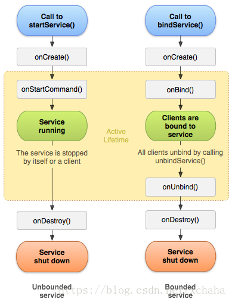
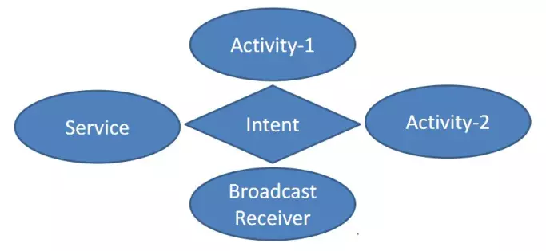
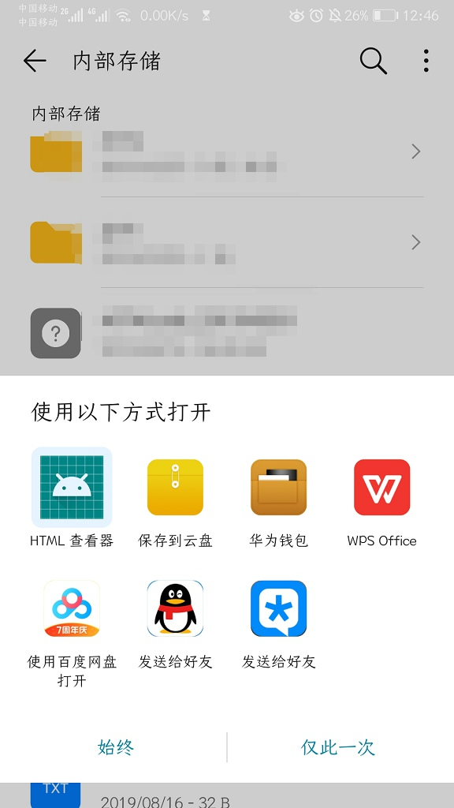
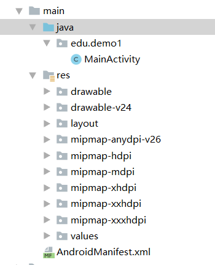
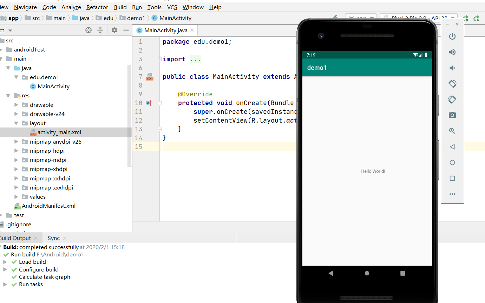

想学习Android的第一步，就应该先了解这个平台系统的大体架构，应用的基础知识等，可是我看到很多入门教程第一步就是直接讲环境搭建下jdk什么的，这种太片面了，往后的NDK，安全沙盒什么的看了也很迷茫。所以我自己查找了许多资料并总结了一下。
主要有：
Android平台架构
Android Application 基础知识
安全沙盒与最小权限原则
Android四大组件（重点）
组件启动与组件之间联系
应用的清单文件
应用资源
Android SDK 目录结构及作用
开发环境搭建
Android平台架构
Android 是一个基于linux内核的开源软件栈，通过软件叠层的方式构建出来的一个操作系统。
平台的架构图（来自官网）：
从下到上分为五层： Linux内核层，HAL硬件抽象层，Library层，Framework层，Application应用层。
Linux内核层
Android平台的基础是Linux内核，主要用linux内核执行一些底层的功能，比如线程和底层的内存管理，还有各种设备的驱动，直接和硬件打交道。linux内核的安全性也能保证这Android的安全。
HAL硬件抽象层
HAL提供了一个标准的界面，向更高级别的javaAPI框架显示设备的硬件功能。每一个硬件组件都是对应着一个库模块，比如相机模块，蓝牙模块，音频模块等。当javaAPI框架需要访问硬件的时候，Android会为这些硬件加载对应的库模块。其实就是对底层硬件驱动的一种封装，让javaAPI框架层只看到一个标准的接口，而有了硬件的无关性。
Libarary层
系统的运行库层，这层主要提供了一些必不可少的运行库。
Android Runtime
Android Runtime 包括两部分，一部分是核心运行时库，为javaAPI框架提供java语言中的大部分功能；另一部分是Android运行时。
在Android 5.0 之前，Android运行时都是Dalvik虚拟机。Dalvik虚拟机相当于一个适配于移动设备更优化的一个java虚拟机（JVM）,也是用JIT编译器来解释运行字节码。
Dalvik运行的是.dex格式的字节码，是构建的时候将.java源码编译成 .class字节码，然后再压缩优化成.dex的字节码。
这个Dalvik可以与java虚拟机对比理解
首先就是Dalvik本身就是一个魔改的java虚拟机，是一种基于寄存器的架构，虽然牺牲了一些平台无关性，但是在代码运行效率方面都比jvm更胜一筹。
JVM与Dalvik区别：
- 运行的字节码不同，指令集架构不同，JVM基于栈，Dalvik基于寄存器
- JVM只运行一个实例，所有的应用都运行在同一个虚拟机中，而Dalvik是每一个应用启动都有一个单独的Dalvik虚拟机对应，每一个Dalvik都对应linux里的一个进程。这样就算其中一个应用crash掉了，也不会影响其他的应用。
到了Android 5.0版本之后，这一部分就变成了Android Runtime（ART），ART与Dalvik相比，增加了更多的功能：
- 不仅有JIT，而且还增加了AOT（预先编译）
- 优化垃圾回收
- 更好的调试支持
预先编译是在安装的时候将 .dex 文件编译成机器码（所以安装的时间会变慢很多），运行的时候跳过了解释的阶段，运行效率之类的都显著提高，但是占用的存储空间就大了，也就相当于用空间来换时间。这样使CPU的利用率也降低不少，能够提升电池的续航时间。
总之，Android Runtime安卓运行时就是用来运行apk里的.dex代码的。
一个APP对应一个ART实例，并且对应于一个进程。
Native C/C++ Libarary
原生C/C++库，通过一些c/c++库为安卓系统提供了一些主要的特性支持。比如OpenGL库提供3D绘图，SQLite库提供数据库支持，WebKit库提供浏览器内核支持…. 这些主要是一些关键的东西（效率至上），所以是用C/C++的库来提供支持。
应用不仅可以调用javaAPI层来访问这里面的模块，而且可以直接调用这些原生库的功能（一般都是在c/c++原生开发的时候）。
NDK: native develop kit 原生开发工具包
当c/c++ 原生开发的时候用到的工具包，其实对大部分的应用都没有很大的价值，因为这不可避免地增加了开发的复杂度。一般在以下场景才会用到：
- 为了非常好的性能。例如游戏，物理模拟这些计算密集型的应用
- 重复使用自己或者其他开发者已经开发好的c/c++库
- 在平台之间移植应用
JAVA API Framework
java API框架，这层主要是用java写的API，包含了Android OS的整个功能集（也就是说开发的时候可以调用这里面的API就可以实现所有功能）。里面包括着各种系统的服务和四大组件（后面会介绍到）。
System Application 和 Application
系统应用可以说是系统内置的应用，这些对于开发者而言，可以像调用java API Framework一样来调用这些System Application。
Application就是我们自己写的第三方的应用这种了，是在最上层。
总之，Android APP的开发语言最好还是官方的JAVA/Kotlin，如果有特殊的需要才会用到native c/c++.
对于应用开发人员主要研究的就是架构里面的Java API Framework层和System Application层。如果有需要还会用到native c/c++ Library。就像Android运行时和运行库和下层的驱动等，不是研究的重点，在把握全局的同时，也要搞清楚重点。
Android Application 基础知识
一个APK文件，包含一个Android应用的所有内容。使用Kotlin，Java，c++编写Android应用，Android SDK会将代码连同数据和资源文件编译成一个APK（Android Package），即带有.apk后缀的归档文件。
安全沙盒与最小权限原则
安全沙盒 security sandbox
沙箱(盒)是为执行中的程序提供隔离环境的一种安全机制。它通过严格控制执行的程序锁访问的资源，以确保系统的安全。
每一个Android应用都处于各自的安全沙盒里面，它们直接不能互相访问文件等。
- Android操作系统首先是多用户的Linux系统，对于每一个应用都是一个不同的用户。
- 默认情况下，系统会为每一个应用分配一个唯一的用户ID，系统为应用中的所有文件设置权限，使得有权限的用户才能访问对应的文件。
- 每个进程都拥有一个独立的虚拟机，默认情况下，每个应用都在其自己对应的Linux进程上执行（应用-虚拟机-Linux进程 这三个是一对一的关系）
最小权限原则
对于每一个应用，也就是对应的一个唯一的Linux用户，默认情况下只能访问其工作所需要的组件。在此环境中，应用无法访问其未获得权限的系统部分。
应用要想访问其他应用的共享数据或者系统服务，有两个途径：
- 让两个应用共享一个Linux用户（也就是说两个应用的linux userid相同），这样二者可以互相访问。在节省资源的时候，也可以安排拥有相同用户ID的应用在同一个Linux进程内运行，共享同一个虚拟机。
- 应用可以请求访问设备数据的权限，由用户明确授予这些权限。比如说应用请求获得访问文件，访问相机，访问联系人等等的权限，由用户明确授予即可。
Android四大组件（重点）
应用的四大组件：
- Activity： 拥有用户界面的单一屏幕
- Service：在后台运行的组件，没有界面
- BroadcastReceiver： （广播接收器）相应系统的广播通知的组件
- Content providers：（内容提供程序），管理共享数据，为其他应用提供查询修改接口
Activity
Activity是与用户交互的入口点，拥有单个的屏幕。
官网上的举例：
例如电子邮件的应用可能会有三个Activity：
- 显示新电子邮件列表的Activity
- 用于撰写电子邮件的Activity
- 用于阅读电子邮件的Activity
这三个紧密协作联系，但是每个Activity都是独立于其他的Activity而存在，其他应用可以启动其中任何一个Activity。
这很像一个web中的一个网页，每一个网页都是独立的，它们一起构成一个网站，其他别的链接也可以打开这个网站里的任何一个网页（当然在Android里面就还会涉及到权限能不能打开的问题）。然后同一时间只能有一个网页显示在屏幕上（独占一个屏幕）。
Activity的生命周期
首先是一个标准的图：
Activity 包括7个生命周期的流程，分别是：
1 | onCreate(),onStart(),onResume(),onPause(),onStop(),onDestory(),onRestart(). |
其中 onCreate()是生命周期的开始，onDestory()是生命周期的结束
- Activity启动：
onCreate()->onStart()（此时不可见） ->onResume-> 处于运行态，可见 - Activity被暂时覆盖：
onPause(), 当用户取消覆盖的时候onResume()恢复 - Activity跳转到了新的Activity、Activity进入了后台或者锁屏的时候：running的Activity ->
onPause()->onStop()-> 停滞状态的Activity - Activity重新回到前台或者解锁的时候： 停滞状态的Activity ->
onRestart()->onStart()->onResume()-> Activity重新running - Activity在后台且内存不足的时候：系统会杀死这个后台状态的Activity（此时这个Activity的引用虽然在任务栈中，但是这个时候引用指向的对象已经是null）。若想再回到running，就需要重新初始化生命周期:
onCreate()->onStart()->onResume() - Activity退出:
onPause()->onStop()->onDestory()
(上面的方法都是对应事件的回调函数，选择重写的方法而不能主动调用。如果想主动退出Activity，应该调用finish())。
Activity的四种启动模式
因为我们的APP一般都是由多个Activity构成的，而在Android给我们提供了任务（Task）的概念，就是将多个相关的Activity收集起来，进行Activity的跳转与返回。实现Android就是通过任务栈来管理这些Activity的。
任务栈：任务栈是一种后进先出的结构。切换到新的Activity，就会被压入栈中成为栈顶。位于栈顶的Activity处于running状态。当back按钮按下的时候，栈顶的Activity会出栈并且调用onDestory()结束生命周期，紧随其后Activity的成为栈顶。当栈内没有Activity那么系统就会回收这个栈，每个APP默认只有一个栈，以这个APP的包名来命名。
四种启动模式：
- standard标准模式: 默认的模式，新的Activity会默认压入栈中。
- singleTop栈顶复用模式：如果新的Activity在任务栈的栈顶（也就是跟栈顶的相同）那么就不会重新创建。如果不在任务栈的栈顶，就跟standard模式相同。
- singleTask栈内复用模式：如果新的Activity在任务栈的栈内，那么新的Activity就不会创建，而是将原本栈内的Activity调到栈顶（这个Activity之上的所以Activity都会被清理销毁）。
- singleInstance单例模式：这个要求更严格，这种模式的Activity只能单独的位于一个任务栈里面，是一个加强版的singleTask。任务栈里面只能有这一个Activity。
Service
服务是Android中实现程序后台运行的解决方案，非常适合去执行那些不需要和用户交互而且还要求长时间运行的任务（没有界面）。比如下载，播放音乐等等。
Service的生命周期
先看图：

首先service的声明中，onCreate()只会回调一次来创建,onDestory()只会在关闭的方法回调一次。
启动service的方法有三种：
StartService()启动serviceBindService()启动service- start之后再bind
这几者的区别：
StartService只是启动这个service，启动它的组件（比如Activity）和这个Service没有关联。service的关闭只能是自己执行完某些任务了之后执行stopSelf或者其他组件调用它的stopService才能终止。
BindService方法启动的Service，其他组件可以通过回调获取Service的代理对象和Service交互，而且两方进行绑定，当启动的组件销毁的时候，Service会自动进行unBind操作解绑。当发现所有的绑定都进行了unBind的时候，Service会销毁。
先start然后另一个组件进行bind这个已经启动的Service的时候，系统仅仅是进行了绑定而不会把生命周期与另一个组件绑定。也就是解绑了之后Service还是属于start启动的service。
BroadcastReceiver
广播能够广泛的运用在应用程序之间传递事件信息的机制。借助广播接收器，系统能够在常规的用户流之外向应用传递事件，从而允许应用响应系统范围内的广播通知。广播接收器可以对许多外部事件进行响应，比如当电话呼入，手机屏幕关闭等事件，系统会发出广播，对应的注册的广播接收器会收到这些事件消息对应地处理。广播接收器虽然没有界面，但是可以创造状态栏的通知。比如wifi连接-> 系统广播事件->对应的广播接收器收到后创建通知：网络连接恢复。
广播接收器有两种注册方法：静态注册和动态注册
- 静态注册： 在
AndroidManifest.xml（应用清单文件，下文会仔细解释）里声明，当APP首次启动的时候就注册到系统中。 - 动态注册： 在某个组件（一般是Activity）运行的时候注册广播接收器。
区别：静态注册是一直在监听对应的消息，耗电耗内存，当APP退出之后也能收到对应的消息进行处理。 动态注册是在代码中动态的注册，当组件退出之后也没法接受广播了（注意要在组件结束前移除广播接收器，否则会导致内存泄漏）。
Content providers
内容提供者提供内容的共享。可以将文件，数据库，网络上的可持久化的数据提供给其他应用修改查询。
一般有两个场景：
- 自己的应用需要访问别的应用的数据，比如访问手机联系人，短信等，想对这些数据进行读取或修改，就要用到这些应用的ContentProvider。
- 自己的应用需要给别的应用共享信息，也要用到ContentProvider，而且可以选择性的共享信息，避免了关键隐私信息泄露等。
组件启动与组件之间联系
Android系统的独特之处在于，任何应用都可以启动其他应用的组件。 比如一个应用想让用户使用设备相机拍摄照片，那可以使用系统的照片应用中对应的Activity即可，当拍摄之后会返回到原先的应用，对用户来说这相机就如同应用的一部分。
当系统启动一个应用的组件时候，就会启动这个应用对应的进程（如果没有启动的话）。这个应用和相机还是属于两个进程。所以说Android应用没有单个的入口点（main()函数），每一个组件都可以是应用的入口。
因为安全沙箱的存在，不能直接启动另一个应用的组件，而是需要系统作为中间人。这些组件之间启动或者访问，就需要传递消息，这个消息就是 Intent（意图）。

Intent 是启动组件，是组件直接联系的桥梁。
四种组件之中，Activity，Service，BroadCastReceiver 这三个组件都是通过Intent启动。（ContentProvider会在ContentResolver请求目标的时候启动，与其他不一样）。
对于启动Activity和Service，Intent会定义要执行的操作，并且可以指定待操作的数据等信息。对于BroadcastReceiver，Intent只会定义待广播的通知。
Intent对象大致包括7个属性：Action（动作），Data（数据），Category（类别），Type（数据类型），Component（组件），Extra（扩展信息），Flag（标志位）。
Intent分为显式Intent和隐式Intent。
- 显式Intent： 直接通过组件名来启动某个组件，每次启动的组件只有一个。
- 隐式Intent： 不指定组件名，而是指定Intent的Action，Data等（只描述意图），当我们启动的时候，会匹配出相关的满足要求的组件，如果不止一个，就会让用户选择使用哪个来处理Intent。
一个最熟悉的场景就是隐式Intent：

应用的清单文件
在Android系统启动应用之前，系统必须通过读取应用的清单文件（AndroidMainifest.xml）确认组件的存在，应用中所有用到的组件(除了动态注册的广播接收器) 都需要在这个文件中声明。
这个文件必须位于应用目录的根目录中。
除了声明应用的组件之外，清单文件还有许多其他的作用，比如：
- 确定应用需要的任何用户权限，比如访问联系人，访问文件等
- 根据应用使用的API，声明所需的最低API级别
- 声明需要的硬件软件功能，比如相机等
主要的三个功能：
声明组件
代码里的Activity就是声明的一个组件1
2
3
4
5
6
7
8
9
<manifest ... >
<application android:icon="@drawable/app_icon.png" ... >
<activity android:name="com.example.project.ExampleActivity"
android:label="@string/example_label" ... >
</activity>
...
</application>
</manifest>声明组件的功能
这个就是声明了一个执行动作为SEND发送的一个组件1
2
3
4
5
6
7
8
9
10
11
12<manifest ... >
...
<application ... >
<activity android:name="com.example.project.ComposeEmailActivity">
<intent-filter>
<action android:name="android.intent.action.SEND" />
<data android:type="*/*" />
<category android:name="android.intent.category.DEFAULT" />
</intent-filter>
</activity>
</application>
</manifest>声明应用要求
1
2
3
4
5
6<manifest ... >
<uses-feature android:name="android.hardware.camera.any"
android:required="true" />
<uses-sdk android:minSdkVersion="7" android:targetSdkVersion="19" />
...
</manifest>
应用资源
Android应用不仅仅是代码，还需要与源代码分离的静态资源，比如图像，音频文件还有xml文件定义的界面动画等。所有的资源都在 /res 的文件夹内。
Android SDK 目录结构及作用
1 | android-sdk/ |
还有两个很重要的工具： SDK管理器 和 安卓模拟器管理器。（可以直接用IDE上带的工具来代替）
开发环境搭建
操作系统：win10
IDE：Android Studio （用起来跟idea一个感觉，非常棒！比VS强太多了）（直接官网下载安装即可）
安装之后主要是设置SDK和模拟器。（我之前用VS下过一个sdk，Android Studio直接识别出来本地的了！）
设置好之后就新建工程，然后新建一个空白的工程，一路next，IDE会自动生成一个空白项目。
项目结构如下：

根目录里的清单文件 AndroidMainifest.xml
java/ 下的java代码（只有一个组件MainActivity）
res/ 里是应用的各种资源，包括布局，图片等等。
res/layout 里的activity_main.xml 就是MainActivity这个Activity对应的布局文件。
配置好模拟器设备之后，直接点击run运行即可完成

Hello World!